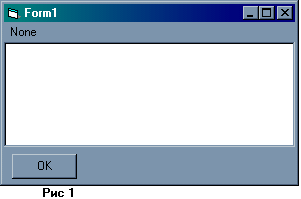
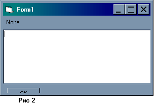
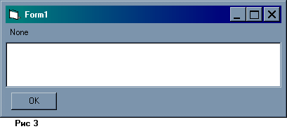

|
Интерфейс пользователя, популяризированный компанией Microsoft, быстро завоевал пользователей своим чрезвычайным удобством. Главным принципом организации этого интерфейса можно считать то, что каждое приложение состоит из одного или более окон. Мы можем открыть несколько приложений и работать с ними одновременно. При этом одним из замечательных свойств окон является возможность их произвольного размещения на экране монитора.
В этой статье мы затронем одну незначительную, но, на наш взгляд, все же важную тему – изменение размеров элементов управления внутри форм с изменяемыми границами. Стандартный набор функций окна не позволяет автоматически контролировать размеры элементов, принадлежащих форме, поэтому реализация задачи ложится на плечи программиста. На первый взгляд задача может показаться слишком простой, но ее практическое решение обнаруживает ряд важных нюансов, которые необходимо знать.
Статья ориентированна на пользователей достаточно знакомых со средой разработки VB-приложений. Поэтому мы не будем останавливаться на инструкциях по добавлению в формы меню и элементов управления. Все изложенное касается исключительно решения поставленной задачи.
Для начала создадим каркас приложения. К сожалению, обойтись без этих первичных приготовлений нельзя, но в целях экономии вашего времени к статье прилагается уже готовый проект-каркас созданный в среде VB 6.0.
Итак, создайте стандартный exe-проект. В единственную форму проекта Form1 добавьте хотя бы один элемент меню. Определите для формы следующие свойства:
ScrollBars = false
BorderStyle = 2 ‘Sizeable
Теперь необходимо позаботиться о главных героях нашей статьи – элементах управления. Добавьте на форму текстовое поле Text1 и кнопку Button1. Расположите их так, чтобы текстовое поле занимало практически всю площадь формы, оставляя только место внизу для кнопки. Свойства Top и Left установите равными 0. Меню и элементы управления не будут играть никакой практической роли, – для нас будут важны лишь их размеры. Запустите проект. Результатом должно быть нечто похожее на Рис 1.

А теперь попробуйте изменить размеры формы. Все элементы управления остаются на своих местах и при своих размерах. Для того чтобы элементы правильно позиционировались на форме, необходимо добавить в обработку события изменения размера формы соответствующий код. Мы должны закрепить некоторые параметры элементов управления относительно размеров формы-контейнера. Вычислите, например, разницу следующих свойств Form1.Width – Form1.Text1.Width. Число, которое мы получим – это разница между шириной формы и шириной текстового поля. Запомните его, для нас обозначим его как А. Очевидно, что при любых размерах формы эта разница должна оставаться постоянной.
Аналогично определим разницу между высотой окна и высотой текстового поля: Form1.Height – Form1.Text1.Height. Эту разницу запомним как число В. Теперь добавьте в код формы следующий обработчик события изменения размера окна:
Private Sub Form_Resize()
Text1.Width = Me.Width - А
Text1.Height = Me.Height - В
End Sub
Не забудьте вместо А и В вставить реальные значения, которые у Вас получились. Благодаря обработчику изменение размеров формы будет приводить к соответствующим изменениям в параметрах текстового поля.
Запустите проект и снова поэкспериментируйте с изменением размеров окна. Размеры текстового окна изменяются правильно, а вот кнопка никак не реагирует. Что ж уважим и кнопку. Размеры кнопки можно оставлять постоянными, а вот ее положение по вертикали необходимо изменять при изменении размеров окна. Найдем еще одну разницу Form1.Height – Form1.Button1.Top.
Для чего мы его вычисли, думаю пояснять не нужно. Запомним число как С. Модифицируйте обработчик события Resize следующим образом:
Private Sub Form_Resize()
Text1.Width = Me.Width - А
Text1.Height = Me.Height - В
Button1.Top = Me.Height - C
End Sub
Запустите проект. Теперь как бы все нормально, но это, к сожалению, до поры до времени. Вот тут и начинаются те самые нюансы, о которых было сказано в начале статьи. Таких нюансов можно по началу не заметить, но в процессе реального использования рано или поздно они все равно «всплывают».
Попробуйте уменьшить размеры окна до совсем малых размеров. Возникает ошибка, когда мы пытаемся присвоить свойствам элементов отрицательные значения. Ширина окна должна быть достаточно для размещения кнопки с учетом расстояний до краев формы, т.е. не меньше, чем Button1.Width + TextWDiff. Что касается высоты, то нужно учесть, что кнопка не должна «залазить» на текстовое поле. Для этого необходимо оставить для нее место, равное ее высоте, а также зарезервировать место для текстового поля. Пускай, для простоты, эта величина будет равняться 2B.
Чтобы меньше использовать условные обозначения, определим дополнительные переменные. Новый вариант обработчика имеет следующий вид:
Private Sub Form_Resize()
Dim TextWDiff As Integer
Dim TextHDiff As Integer
Dim ButtTDiff As Integer
TextWDiff = А
TextHDiff = В
ButtTDiff = С
If Me.Height < 2 * В Then Me.Height = 2 * В
If Me.Width < Button1.Width + TextWDiff Then Me.Width = _
Button1.Width + TextWDiff
Text1.Width = Me.Width - TextWDiff
Text1.Height = Me.Height - TextHDiff
Button1.Top = Me.Height - ButtTDiff
End Sub
Переходим к следующему нюансу. Попробуйте сначала максимизировать, а потом свернуть дочернее окно. Максимизация проходит нормально, а вот с минимизацией возникают проблемы – ошибка, происходящая потому, что изменять размеры окна, когда форма свернута или развернута нельзя. Когда мы разворачиваем форму, высота достаточна для вмещения текстового поля и кнопки, поэтому обработчик не изменяет размер формы, а вот при минимизации условие выполняется и происходит ошибка. Так как размеры элементов в свернутой форме не имеют для нас значения, можно отказаться от обработки вообще, вставив в обработчик первую после определений строчку:
If Me.WindowState = 1 Then Exit Sub
Все возможные вариации пользователя с размерами окна учтены. Форму можно расширять, вытягивать, сворачивать, в общем, делать с ней все, что заблагорассудится. Но есть еще одно действие пользователя, которое хотя и влияет на размеры на размеры формы косвенно, но может свести на нет все наши старания.
Предлагаю провести следующий эксперимент. Запустите проект, и измените настройки рабочего стола, в частности увеличите высоту окна заголовка, размер рамки активного окна и высоту меню. Посмотрите на Рис 2.

Кнопка на половину закрыта, а правой рамки текстового поля не видно, так как оно “вылезло” за рамки окна. Изменяя настройки внешнего вида окна, мы фактически увеличили размер косметических элементов и, ровно на столько же уменьшили размеры полезной площади формы-контейнера. Ширина рамки, высота меню и окна заголовка, все это входит в общие размеры формы. С другой стороны координаты (0,0) располагаются в левом верхнем углу полезной площади.
Пользователь имеет полное право изменить эти настройки. Приведенный на Рис 2 пример, возможно, несколько преувеличен, но вы можете сами убедиться, что вполне нормальные схемы настроек рабочего стола подразумевают небольшую разницу этих величин. Сравните, например, «Обычную» схему и схемы «Баклажан» или «Розовая». А что уж говорить про схемы для людей с плохим зрением.
Получается, что числа А, В, С не постоянны. Разберемся, из каких величин они состоят. Число А состоит из двойного размера рамок окна и той разницы, которую вы сами предполагаете. Мы специально установили свойство Left равным 0, чтобы разница состояла только из рамок самого окна. Изменяя ширину рамки активного окна, вы оставляете меньше площади для текстового поля. Именно поэтому при постоянной величине А, правая рамка поля отсекается.
Разница В состоит из рамок окна, высоты окна заголовка, высоты меню и места, выделенного под кнопку. Наконец, разница С состоит из той же переменной части, что и высота текстового поля и места, выделенного под поле.
Для определения настроек рабочего стола можно воспользоваться специальной функцией API – GetSystemMetrics. Внесите ее определение в отдельный модуль.
Public Declare Function GetSystemMetrics Lib _
"user32" (ByVal nIndex As Long) As Long
Public Const SM_CXFRAME = 32
Public Const SM_CYFRAME = 33
Public Const SM_CYCAPTION = 4
Public Const SM_CYMENU = 15
Вынесение функции в независимый модуль сделано для того, чтобы возможным был вызов функции из окна отладки.
Тут приведено также определение некоторых констант, которые функция принимает в качестве аргумента. Функция возвращает размерность в соответствии с указанной константой. Возвращаемый размер всегда измеряется в пикселях. Константы SM_CXFRAME и SM_CYFRAME определяют соответственно размер вертикальной и горизонтальной рамки окна. Нужно учесть, что размеры в VB по умолчанию задаются в твипах. При этом один пиксель равен 15-и твипам.
Замените в обработчике определение переменной TextWDiff на следующее:
TextWDiff = GetSystemMetrics(SM_CXFRAME) * 15 * 2
Теперь при каждом изменении ширины окна величина А будет заново вычисляться как двойной размер рамки окна.
Значение остальных констант, которые функция GetSystemMetrics принимает в качестве аргумента, следующее:
SM_CYCAPTION – высота окна заголовка;
SM_CYMENU – высота меню;
В окне отладки (Ctrl+G) впишите следующую строчку (одной строкой):
? (GetSystemMetrics(SM_CYCAPTION)+GetSystemMetrics(SM_CYMENU)+ 2* GetSystemMetrics (SM_CYFRAME))*15
Результатом будет изменяемая составляющая числа В. Теперь, отняв от В полученное число, получим постоянную составляющую D. Определение переменной TextHDiff заменим на:
TextHDiff = D + 15 * (GetSystemMetrics(SM_CYCAPTION) + 2 _
GetSystemMetrics(SM_CYFRAME))
Разницу С можно теперь вычислить по-другому. Определим ее как расстояние между нижней границей текстового поля и верхним углом кнопки. Вычислите С как Form1.Button1.Top – Form1.Text1.Height. Теперь обработчик события Resize будет выглядеть так:
Private Sub Form_Resize()
Dim TextWDiff As Integer
Dim TextHDiff As Integer
Dim ButtTDiff As Integer
TextWDiff = GetSystemMetrics(SM_CXFRAME) * 15 * 2
TextHDiff = D + 15 * (GetSystemMetrics(SM_CYCAPTION) + _
GetSystemMetrics(SM_CYMENU) + _
2*GetSystemMetrics(SM_CYFRAME))
ButtTDiff = С
If Me.WindowState = 1 Then Exit Sub
If Me.Height < 2 * В Then Me.Height = 2 * В
If Me.Width < Button1.Width + TextWDiff Then Me.Width = _
Button1.Width + TextWDiff
Text1.Width = Me.Width - TextWDiff
Text1.Height = Me.Height - TextHDiff
Button1.Top = Text1.Height + ButtTDiff
End Sub
На Рис. 3 показан внешний вид формы после внесенных изменений в настройки рабочего стола. Теперь все верно.

Напоследок рассмотрим еще один вариант расположения элементов управления. Предположим, что кнопка Button1 всегда должна располагаться по центру формы. Для решения этой задачи нужно знать полезную ширину формы и ширину кнопки. Зная текущую ширину формы, мы можем определить свойство кнопки Left. Вставьте в обработчик следующую строку:
Button1.Left = (Me.Width - TextWDiff - Button1.Width) / 2
Как бы вы не изменяли теперь размеры формы, кнопка всегда будет оставаться посередине.
Что же, теперь все нюансы учтены, осталось подвести итоги.
Для изменения размеров элементов управления внутри формы с изменяемыми границами необходимо обрабатывать событие формы Resize. Изменяемые размеры элементов управления вычисляются от ширины и высоты формы. Разница между этими размерами состоит из переменной и постоянной составляющих.
Переменная составляющая включает размеры стандартных частей, входящих в саму форму и зависящих от настроек рабочего стола. Определить эти размеры можно с помощью функции API – GetSystemMetrics с использованием в качестве аргумента специальных констант с префиксом «SM_».
Необходимо ограничивать минимальные размеры формы так, чтобы при обработке события изменения границ, параметрам элементов управления не присваивались отрицательные значения, а сами элементы не накладывались друг на друга.
При сворачивании формы, обрабатывать событие изменения границ формы не стоит, так как может возникнуть ошибка в момент ограничения размеров окна.
Примеры.
Источник: http://www.vbnet.ru/ |